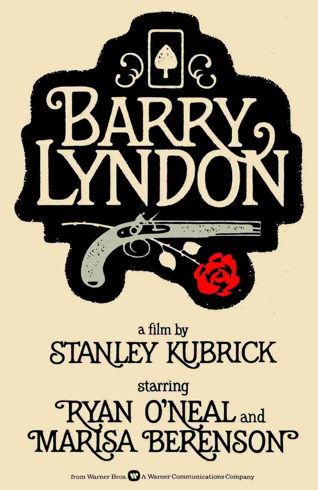

Barry Lyndon
48th Academy Awards
(Oscars 1976)
7 Nominations, 4 Awards
| Nominations | ||
|---|---|---|
| Category | Nominees | Result |
| Best Picture | Stanley Kubrick | Nominated |
| Directing | Stanley Kubrick | Nominated |
| Writing (Screenplay Adapted from Other Material) | Stanley Kubrick | Nominated |
| Cinematography | John Alcott | Won |
| Art Direction | Ken Adam, Roy Walker, and Vernon Dixon | Won |
| Costume Design | Milena Canonero and Ulla-Britt Soderlund | Won |
| Music (Scoring: Original Song Score and Adaptation -or- Scoring: Adaptation) | Leonard Rosenman | Won |